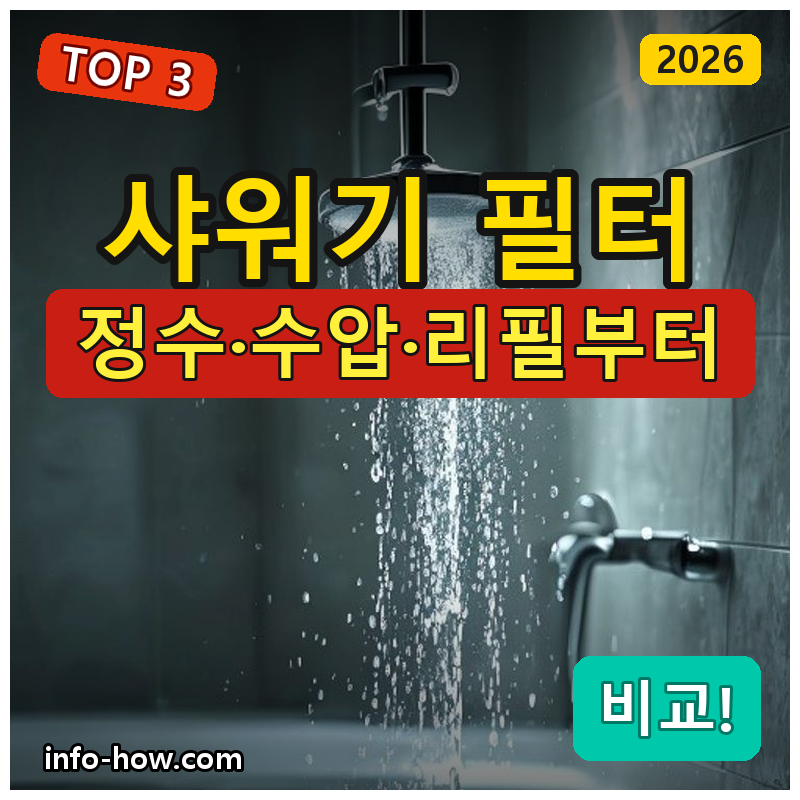
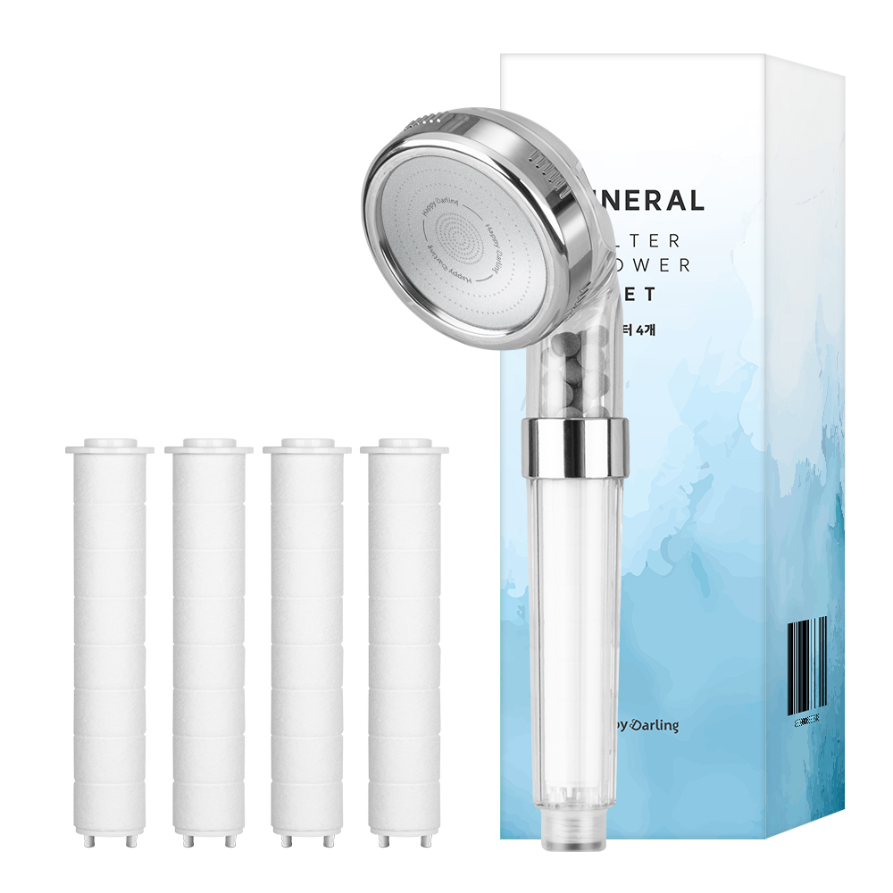
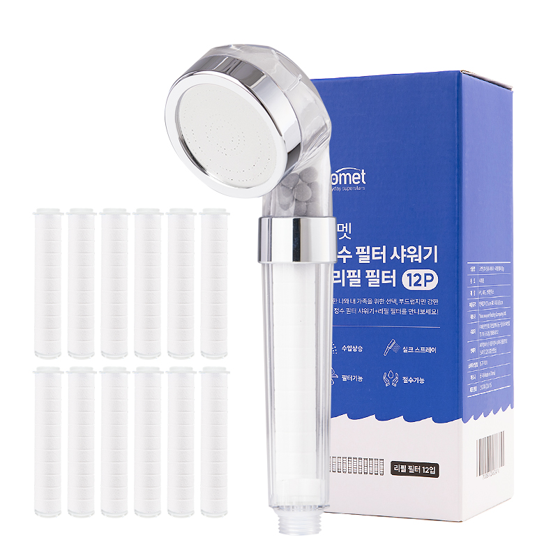
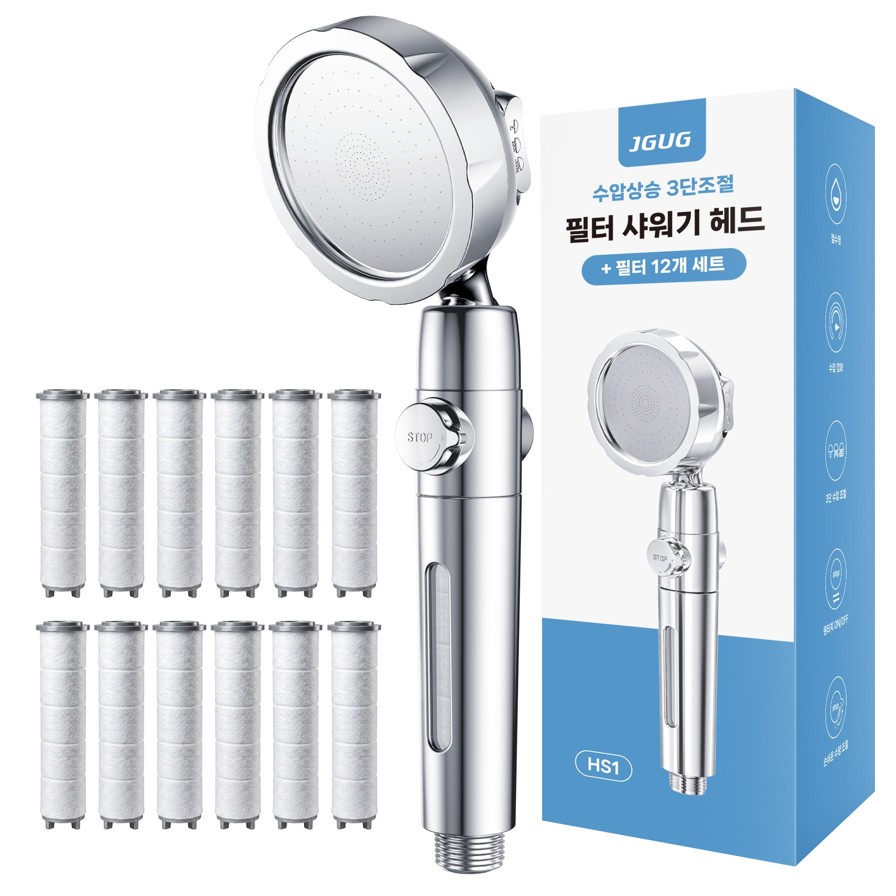

홈 › 제품리뷰 › 생활/가전
샤워기 필터, 가성비냐 고압이냐
작성: 생활서식 모음 · 2026-08-23

파트너스 활동의 일환으로 일정액의 수수료를 지급받습니다
🛒 오늘의 쿠팡 특가 보러가기 →
샤워기 필터, 녹물·염소 걱정에 바꾸려는데 뭘 살까요?
핵심은 "정수(필터)와 수압, 리필" 3대 를
"저렴한 4단" "리필 넉넉 정수" "고압 수압상승"용도별 정답 까지 담았으니
📋 목차
샤워기 필터, 가성비냐 고압이냐 — 결론 먼저 스펙 비교표: 한눈에 보기 샤워기 필터 고를 때 봐야 할 3가지 가성비냐 고압이냐, 뭘 사야 할까? 자주 묻는 질문 (FAQ) 결론: 한 줄 요약
샤워기 필터, 가성비냐 고압이냐 — 결론 먼저
샤워기 필터는 "정수 성능과 수압(고압 여부)" 로 갈려요.4단 가성비 , 리필 넉넉이면 정수필터 세트 , 수압까지 세게면 고압 이 무난합니다.
1 가성비·입문 (가성비 초이스)
가성비

4단 가성비
1. 해피달링 미네랄 4단 필터 샤워기 헤드 (+필터 4p)
정수·고압은 아니어도
추천 대상
필터 샤워기를 저렴하게 처음 써보려는 분 녹물·이물을 가볍게 걸러내려는 분 필터가 여러 개 포함된 걸 원하는 분 장점
6천원대로 부담 없이 필터 샤워기 마련 4단 필터라 이물·녹물을 걸러줌 필터 4p 포함이라 한동안 리필 걱정 없음 단점
이 제품은 가성비·입문용 입니다. 리필 넉넉이면 2번 정수필터, 수압까지면 3번 고압으로 가세요. "입문"이면 가성비 좋아요.
한줄 리뷰
"저렴하게 필터 샤워기 시작"이면 해피달링이 무난합니다. 필터도 넉넉해요. 정수·수압이면 2·3번을 보세요.
주요 스펙
제품: 해피달링 4단 필터 샤워기 헤드 필터: 4단 구성: 필터 4p 배송: 로켓배송 가격: 약 6,020원 (변동 가능) ※ 실제 스펙·가격과 차이가 있을 수 있습니다
2 정수·리필 (베스트 초이스)
베스트

정수필터 세트
2. 코멧 정수 필터 샤워기 (+리필 필터 12p)
리필 12p로 오래 쓰는
추천 대상
정수 필터를 오래 넉넉히 쓰려는 분 리필 교체 비용을 아끼려는 분 녹물·염소를 꾸준히 걸러내려는 분 장점
리필 필터 12p라 오랫동안 교체 걱정 없음 정수 필터라 이물·녹물을 꾸준히 걸러줌 리필 단가가 저렴해 유지비가 낮음 단점
저렴한 입문이면 1번, 수압까지면 3번 고압입니다. 2번은 "정수+리필 12p" 의 실속 구간 — 오래 쓰기에 가장 무난합니다.
한줄 리뷰
"리필 넉넉하게 오래 쓰고"면 코멧이 좋습니다. 유지비가 낮아요. 수압상승이면 3번을 보세요.
주요 스펙
제품: 코멧 정수 필터 샤워기 필터: 정수 필터 구성: 리필 12p 배송: 로켓배송 가격: 약 11,780원 (변동 가능) ※ 실제 스펙·가격과 차이가 있을 수 있습니다
3 수압·정수 (프리미엄)
프리미엄

고압 수압상승
3. JGUG 필터 샤워기 헤드 (고압 수압상승·3단, +리필 12p)
필터에 고압 수압상승까지
추천 대상
필터도 쓰면서 수압도 세게 원하는 분 수압이 약한 집에서 시원하게 씻으려는 분 3단 물줄기 조절이 필요한 분 장점
고압 수압상승이라 필터를 껴도 물줄기가 시원 3단 조절로 상황에 맞게 물줄기 변경 리필 12p라 정수+수압을 오래 유지 단점
저렴한 입문이면 1번, 리필 넉넉이면 2번이 합리적입니다. 3번은 고압 수압상승+정수 가 필요한 분에게 값어치가 있습니다.
한줄 리뷰
"필터 끼면 수압 약해질까 걱정"이면 고압 JGUG이 좋습니다. 시원해요. 단순 정수면 1·2번이 합리적입니다.
주요 스펙
제품: JGUG 고압 필터 샤워기 헤드 기능: 수압상승·3단 구성: 리필 12p 배송: 로켓배송 가격: 약 17,800원 (변동 가능) ※ 실제 스펙·가격과 차이가 있을 수 있습니다
스펙 비교표: 한눈에 보기
가격·풍량·무게 중 본인에게 중요한 기준부터 보세요. "최고" 표시는 3제품 중 객관적 1위 값입니다.
← 좌우로 스크롤 →
샤워기 필터 고를 때 봐야 할 3가지
정수·수압만 봐도 후회가 적습니다.
1) 필터·정수 — 걸러냄
녹물·이물·염소 등을 걸러주는 필터 방식 확인 필터가 오염되면 교체(색 변화로 확인 가능) 수질이 나쁜 지역일수록 필터 효과 체감 2) 수압 — 물줄기
필터를 끼면 수압이 약해질 수 있음 수압이 약한 집은 수압상승(고압) 기능 확인 물줄기 단수 조절이 있으면 편리 3) 리필·유지비 — 교체
리필 필터가 저렴·넉넉하면 유지비가 낮음 교체 주기(사용량·수질에 따라 다름) 확인 호환 리필을 구하기 쉬운지도 참고 가성비냐 고압이냐, 뭘 사야 할까?
수질·수압 상황만 정하면 답이 나옵니다.
가성비·입문: 1번 해피달링 4단 → 저렴하게정수·리필: 2번 코멧 → 오래 넉넉히수압·정수: 3번 JGUG 고압 → 시원하게자주 묻는 질문 (FAQ)
Q1. 샤워기 필터가 정말 효과가 있나요? 녹물·이물 제거엔 도움이 됩니다. 필터는 수도관의 녹물·이물·일부 염소 등을 걸러줘, 특히 노후 배관이거나 수질이 걱정되는 집에서 체감이 됩니다. 필터가 오염되며 색이 변하는 것으로 걸러진 정도를 볼 수 있습니다. 다만 정수기 수준의 완벽한 정수는 아니며, 샤워 물의 이물·녹물을 줄이는 용도입니다.
Q2. 필터를 끼면 수압이 약해지나요? 다소 약해질 수 있어 고압 제품이 나옵니다. 필터가 물길을 거치므로 수압이 약해질 수 있는데, 수압상승(고압) 설계 제품은 오히려 물줄기를 시원하게 만들어줍니다. 수압이 약한 집이라면 고압·수압상승 표기 제품을 고르는 것이 좋습니다.
Q3. 필터는 얼마나 자주 교체하나요? 사용량·수질에 따라 다르며 색 변화로 확인합니다. 보통 몇 주~한두 달에 한 번 교체하며, 필터가 갈색 등으로 변하면 교체 시기입니다. 물을 많이 쓰거나 수질이 나쁘면 더 자주 갈아야 합니다. 리필이 넉넉한 세트를 고르면 유지가 편하고 비용도 아낍니다.
Q4. 샤워기 필터 설치는 어렵나요? 대부분 기존 샤워기와 교체만 하면 됩니다. 샤워 호스에 돌려 끼우는 방식이라 공구 없이 손으로 교체할 수 있어 설치가 간단합니다. 호스 규격이 표준이면 대부분 호환되며, 누수 방지를 위해 나사부를 잘 조이면 됩니다.
Q5. 피부·모발에도 도움이 되나요? 염소·이물 감소로 자극이 줄 수 있으나 과장은 금물입니다. 물속 염소·이물을 줄여 피부·모발 자극이 덜하다고 느끼는 경우가 있으나, 효과는 개인·수질에 따라 다르고 의학적 치료 효과를 기대할 것은 아닙니다. 녹물·이물이 줄어 샤워감이 개선되는 정도로 보면 됩니다.
결론: 한 줄 요약
1) 해피달링 4단 — 약 6,020원 / 가성비·입문. 필터 4p.2) 코멧 정수필터 — 약 11,780원 / 정수·리필. 리필 12p.3) JGUG 고압 — 약 17,800원 / 수압·정수. 수압상승.이 포스팅은 쿠팡 파트너스 활동의 일환으로, 이에 따른 일정액의 수수료를 제공받습니다.